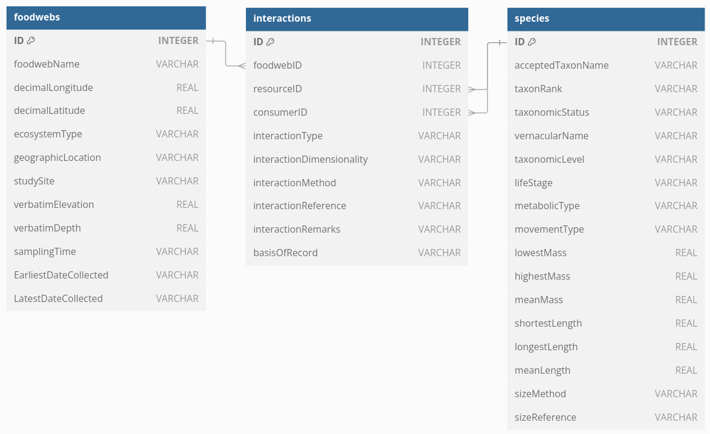

Emilio Berti
,
replaced with ; when within ". -
" removed. - Multiple spaces trimmed to one space. -
Convert all uppercase letters to lowercase.Additionally, tables and shapefiles are created to be inserted into a PostGIS database to feed the website server.
I re-structured the GATEWAy database into <…> tables:
The old database was a single csv file. I colored the columns of this
file with the same color of the tables above. The symbol => show
columns that have been renamed. E.g., A =>
B means A was renamed to B,
following DarwinCore standards: http://rs.tdwg.org/dwc/terms.htm#4. All column names
have been converted to camelCase. Strike-through columns have been
dropped.
foodwebName
longitude => decimalLongitude
latitude => decimalLatitude ecosystemType
geographicLocation => locality
studySite
altitude => verbatimElevation
depth => verbatimDepth
samplingTime
sampling.start.year =>
EarliestDateCollected
sampling.end.year =>
LatestDateCollected
key
taxonID, identified by the combination of all
fields related to species
taxonomy =>
acceptedTaxonName
common =>
vernacularName
lifeStage
metabolic.type => metabolicType
movement.type => movementType
mass.min.g. => lowestMass, in
grams
mass.max.g. =>
highestMass, in grams
mass.mean.g.
=> meanMass, in grams
length.min.cm. => shortestLength, in
cm
length.max.cm. =>
longestLength, in cm
length.mean.cm. => meanLength, in cm
size.method => sizeMethod
size.citation => sizeReference
taxonomy.status => taxonomicStatus
taxonomy.level => taxonRank
autoid
interactionID, identified by unique taxonID and
foodwebName
interactionType
interactionDimensionality
link.methodology => interactionMethod
link.citation =>
interactionReference
interaction.classification =>
basisOfRecord
link.citation =>
interactionReference
notes =>
interactionRemarks

To run the whole pipeline at once:
bash pipeline.shThis runs (in order):
gateway-v.2.0.csv.Some of this steps can take some time. To avoid re-running already
completed steps, once the step is completed successfully an hidden
(empty) file is added to the steps folder. Steps
that have such files will not be re-ran. You can re-run the whole
pipeline from scratch specifying the option --clean:
bash pipeline.sh --cleanTo see available options and usage:
bash pipeline.sh --help.
psql -U postgres
CREATE DATABASE gateway;
\c gateway;
CREATE EXTENSION postgis;CREATE TABLE foodwebs(
ID INTEGER PRIMARY KEY,
foodwebName VARCHAR,
decimalLongitude REAL,
decimalLatitude REAL,
ecosystemType VARCHAR,
geographicLocation VARCHAR,
studySite VARCHAR,
verbatimElevation REAL,
verbatimDepth REAL,
samplingTime VARCHAR,
EarliestDateCollected VARCHAR,
LatestDateCollected VARCHAR
);
COPY foodwebs FROM '/home/eb97ziwi/gateway-database/data/foodwebs.csv' CSV HEADER;CREATE TABLE species(
ID INTEGER PRIMARY KEY,
acceptedTaxonName VARCHAR,
taxonRank VARCHAR,
taxonomicStatus VARCHAR,
vernacularName VARCHAR,
taxonomicLevel VARCHAR,
lifeStage VARCHAR,
metabolicType VARCHAR,
movementType VARCHAR,
lowestMass REAL,
highestMass REAL,
meanMass REAL,
shortestLength REAL,
longestLength REAL,
meanLength REAL,
sizeMethod VARCHAR,
sizeReference VARCHAR
);
COPY species FROM '/home/eb97ziwi/gateway-database/data/species.csv' CSV HEADER;CREATE TABLE interactions(
ID INTEGER PRIMARY KEY,
foodwebID INTEGER,
resourceID INTEGER,
consumerID INTEGER,
interactionType VARCHAR,
interactionDimensionality VARCHAR,
interactionMethod VARCHAR,
interactionReference VARCHAR,
interactionRemarks VARCHAR,
basisOfRecord VARCHAR
);
COPY interactions FROM '/home/eb97ziwi/gateway-database/data/interactions.csv' CSV HEADER;Table foodwebs {
ID INTEGER [primary key]
foodwebName VARCHAR
decimalLongitude REAL
decimalLatitude REAL
ecosystemType VARCHAR
geographicLocation VARCHAR
studySite VARCHAR
verbatimElevation REAL
verbatimDepth REAL
samplingTime VARCHAR
EarliestDateCollected VARCHAR
LatestDateCollected VARCHAR
}
Table species {
ID INTEGER [primary key]
acceptedTaxonName VARCHAR
taxonRank VARCHAR
taxonomicStatus VARCHAR
vernacularName VARCHAR
taxonomicLevel VARCHAR
lifeStage VARCHAR
metabolicType VARCHAR
movementType VARCHAR
lowestMass REAL
highestMass REAL
meanMass REAL
shortestLength REAL
longestLength REAL
meanLength REAL
sizeMethod VARCHAR
sizeReference VARCHAR
}
Table interactions {
ID INTEGER [primary key]
foodwebID INTEGER
resourceID INTEGER
consumerID INTEGER
interactionType VARCHAR
interactionDimensionality VARCHAR
interactionMethod VARCHAR
interactionReference VARCHAR
interactionRemarks VARCHAR
basisOfRecord VARCHAR
}
Ref: foodwebs.ID < interactions.foodwebID
Ref: species.ID < interactions.consumerID
Ref: species.ID < interactions.resourceIDRscript --vanilla -e "rmarkdown::render('README.Rmd')"
pandoc -s --toc -c readme.css README.md -o README.html --metadata title="GATEWAy Database"